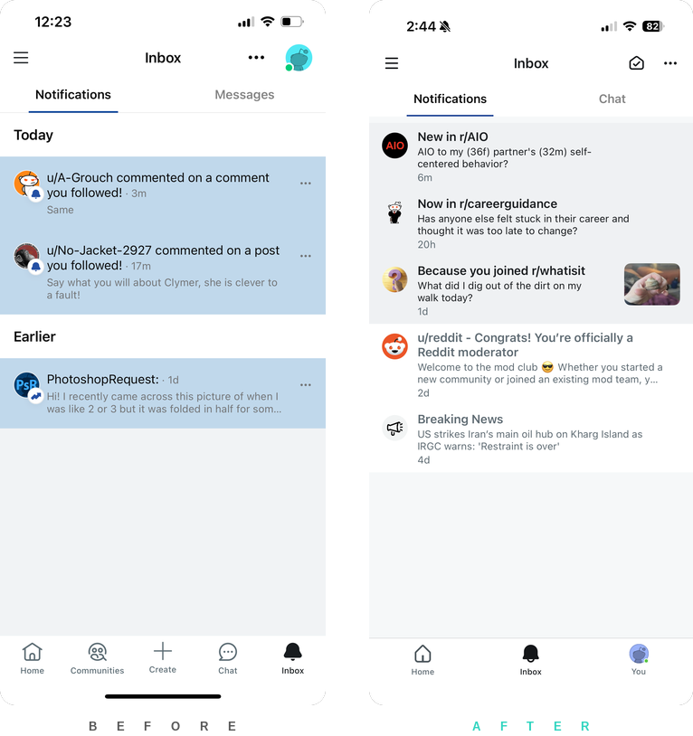
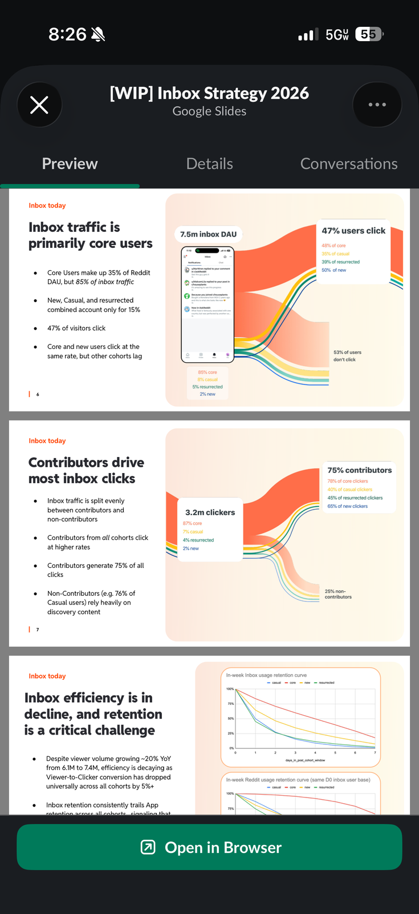
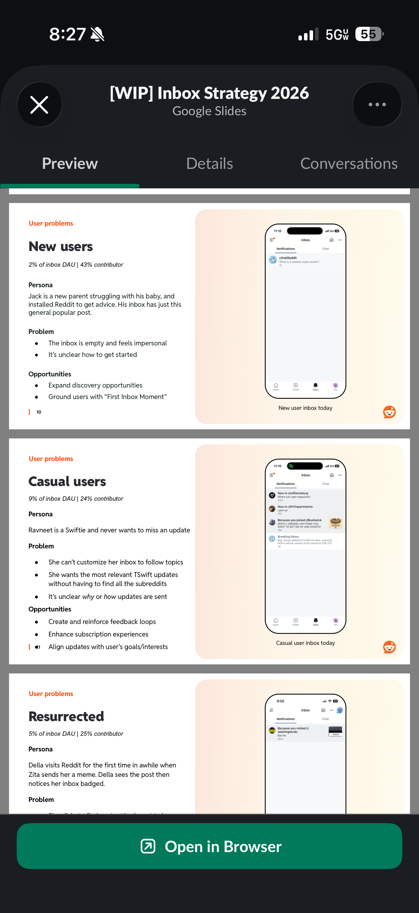
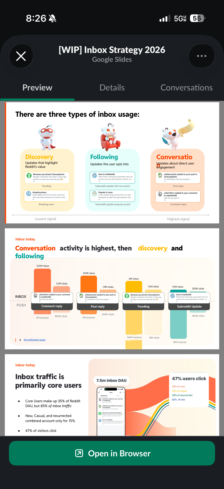
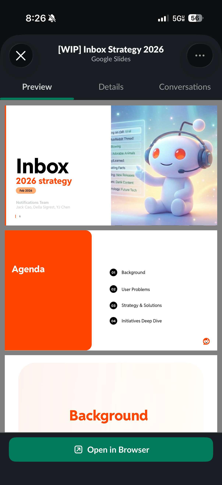

Notifications & Inbox
Reddit sends 185 million push notifications daily. The inbox serves 7.5 million daily users. I built the segmentation framework, defined the inbox vision, and led the evolution from five disconnected surfaces into a unified system. +1.3M incremental DAU. +2.7M daily good visits.
Reddit sends 185 million push notifications daily across hundreds of millions of users—comment replies, trending posts, subreddit updates. The inbox serves 7.5 million daily users, but when I joined the notifications team, no designer owned this surface. Five notification types operated independently with no shared strategy, and engagement was declining—viewer-to-clicker conversion had dropped 5% despite 20% year-over-year traffic growth.
I built the segmentation framework, defined the inbox vision, and led the evolution from five disconnected surfaces into a unified system.

The Framework
I developed a three-tier model based on signal strength: direct activity, explicit opt-ins, and recommendations. This resolved a core tension—recommendation notifications performed well by engagement metrics but drew user complaints. The framework showed when each type belonged: high-activity users with abundant direct notifications don't need discovery; new users without activity history do.
The inbox drives 2% of all comments on Reddit—a figure that shifted leadership investment and directly shaped how we targeted the strategy across cohorts.

The Evolution
Modernize — I migrated the inbox to the platform design system and standardized copy across all notification types. Contextualized copy—showing why users received a notification—doubled click-through compared to generic framing.

Deliver on expectations — Recommendations tangled with direct notification delivery, so subscriptions couldn't arrive reliably. I influenced the engineering roadmap to separate these pipelines, expanding inventory with breaking news and contextualized recommendations. I redesigned subreddit notification behavior to match how users actually think about subscriptions—push good visits climbed +1% across 15 million daily receives.

Handle volume — Accurate delivery created a new problem: high-activity communities flooded the inbox. The core principle became the inbox as a scannable launchpad—just enough context to know what happened, then a direct path there. I removed the overflow menu on notification line items and replaced it with gestural access—swipe actions and long press—reducing visual clutter while keeping expected utilities accessible. Engagement held steady, which meant the pattern worked. I designed push landing experiences that surfaced related content at the moment users typically bounced after opening a notification.

Unify — I consolidated notifications and chat into a single inbox—a surface that hadn't existed before, requiring product, engineering, and design alignment across four teams. Chat had migrated into the inbox, and private messages—deeply baked into foundational internal systems—required a lengthy deprecation effort from engineering before the consolidation was possible. Each team had different definitions of what “inbox” meant. I built fully operable prototypes and put them in front of real users, which shifted internal conversations from opinion to evidence.

The Results
I surfaced why each recommendation appeared to new users. Behavior changed first—DAU for that cohort lifted +1.4%, push click-through rose +6.4% across the 7.5M daily inbox user base.
I redesigned push landing experiences to prevent the dead-end bounce after opening a notification. Users found related content at the moment they’d typically leave—subscription good visits shifted +2-3% on 15 million subreddit update receives.
The notifications team shipped +1.3M incremental DAU and +2.7M daily good visits year-to-date, exceeding targets by 75%. The three-tier framework and cohort segmentation became the foundation for notification design across Reddit.
